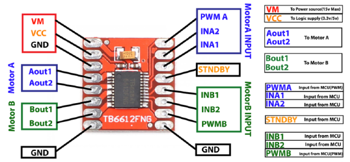
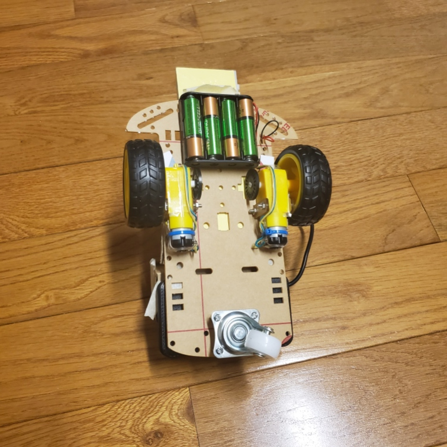
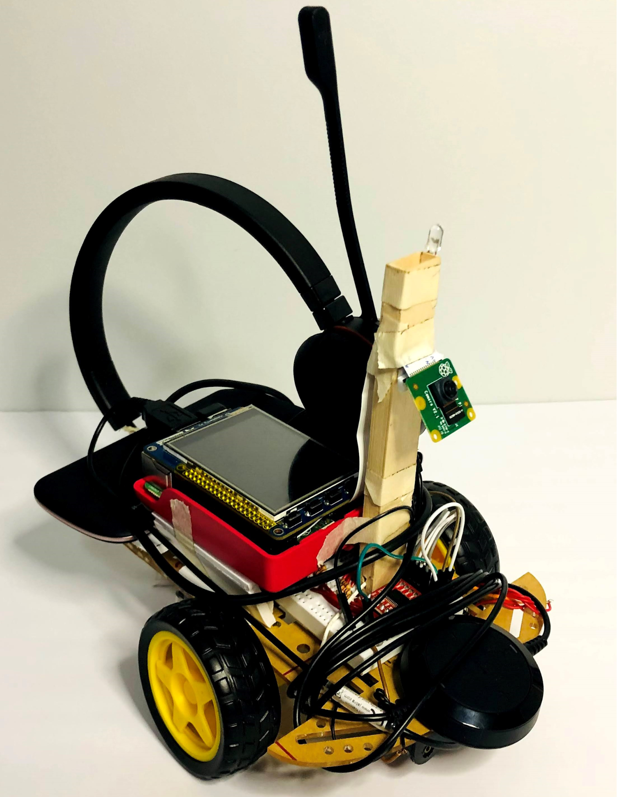
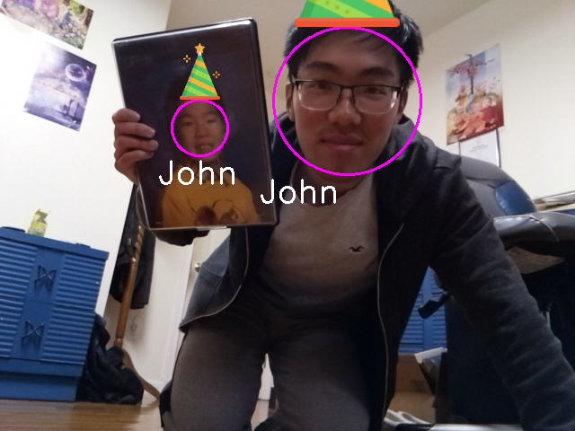

Design
Design and Testing
Build and Construction
>>>>> gd2md-html alert: inline image link here (to images/image5.png). Store image on your image server and adjust path/filename/extension if necessary.
(Back to top)(Next alert)
>>>>>

Figure 2: Sparky Wiring and Circuit Design
The assembly of our robo pet builds off of a previous lab, Lab 3, reusing the same chassis, motors, motor controller, and battery design. The major additions are the camera, the microphone, and additional construction materials for mounting.
This project uses a Raspberry Pi 4 2GB with PiTFT Display on top. Connected to the display is a breakout cable which is inserted into a full sized breadboard. Here on this breadboard, we have wiring for our motor controller as well as our two DC motors, and Sparky’s notification LED. These objects are all attached to a thin acrylic plate with mounting holes. While our overall construction is not ideal in terms of sturdiness, it is perfectly suitable for prototyping our design. Underneath and towards the back of our chassis is a ~2200mAh lithium ion battery responsible for directly powering our Raspberry Pi when Sparky is set to work untethered. Towards the front of the chassis is a 6V AA battery holder used to power our motors. Our motor controller is the Sparkfun TB6612FNG dual-channel motor controller as shown below. It gives us control of both independent motor operation as well as duty cycle to assist with making turns and changing speeds.
PWMA → GPIO 26 PWMB → GPIO 16
INA1 → GPIO 4 INB1 → GPIO 20
INA2 → GPIO 5 INB2 → GPIO 21
>>>>> gd2md-html alert: inline image link here (to images/image6.png). Store image on your image server and adjust path/filename/extension if necessary.
(Back to top)(Next alert)
>>>>>

Sparkfun TB6612FNG dual-channel motor controller
Shown below is the underside with our battery placement, motors, and wheels all easily visible.
>>>>> gd2md-html alert: inline image link here (to images/image7.png). Store image on your image server and adjust path/filename/extension if necessary.
(Back to top)(Next alert)
>>>>>

Figure 4: Underside of Sparky
As seen in Figure 1, the Raspberry Pi V2 Camera Module is placed directly facing forward and as high as possible upon the robot to get an angle closer to head level for face detection and recognition. Due to the constraints of our build, Sparky performs most optimally on a table surface where one’s face is most visible from the camera’s perspective due to the height. In a more advanced build there would be more room for an actuated camera with an additional degree of freedom to pivot and look around during operation. Our cameras are stood up onto our robot primarily using cardboard/wood splints. What is not displayed here is that Sparky additionally uses a USB connected mic for receiving audio. We individually found our own mics to use, but any small and lightweight omnidirectional microphone is ideal here. John substituted in a Blue Snowball iCE Microphone with a long wire while Carlos used a small headset and strapped it around Sparky.
Voice recognition
Microphone Input:
With any USB microphone connected to the Py we use the pyaudio() library to establish an audio stream from the microphone by setting variable pa = pyaudio.PyAudio(). Next we open the audio stream pa.open() and set the sample rate, channels, format, and size of the buffer inside this variable (configuration based on the pyadudio library). The values used for the rate, format and frames_per_buffer are taken from the picovoice library because we will later process the audio stream using the picovoice library and there must be congruence between the audio format and the necessary requirements of the picovoice library. The audio_stream variable setup is shown below.
audio_stream = pa.open(
rate=_picovoice.sample_rate,
channels=1,
format=pyaudio.paInt16,
input=True,
frames_per_buffer=_picovoice.frame_length)
Using Picovoice():
The picovoice engine accepts 16-bit linearly-encoded PCM and operates on a single-channel. The audio is processed in consecutive frames. Picovoice is able to understand wake words (hotword) and after the recognition of the wake word it detects the intentions of the user using inference. Both the wake word and the inference are customizable and can be created using the online picovoice console, after the desired phrases are created and trained online we can download the trained files that pertain to the wake word and inferences. The wake word is .ppn type file and the inference is a .rhn type file. The path to these files are placed inside variable _picovoice along with other configurations seen below.
_picovoice=Picovoice(
keyword_path=_keyword_path,
wake_word_callback=wake_word_callback,
context_path=_context_path,
inference_callback=inference_callback,
porcupine_library_path=None,
porcupine_model_path=None,
rhino_sensitivity=0.2,
rhino_library_path=None,
rhino_model_path=None,
porcupine_sensitivity=1)
Variables wake_word_callback and inferecence_callback are assigned to a respective function that handles the signal of such an event occurring. Variables rhino_sensitivity and porcupine_sensitivy are assigned a value from [0-1] where 1 is the most sensitive value for the library to react to inferences and to the wake word respectively. We set the hot word sensitivity to the 1 to make sure a call to Sparky will be very easily recognized. The value set for the inference is low to make sure that the spoken commands are correctly ottered and so that the library is not set off by incorrectly uttered commands that are not part of Sparky’s understanding.
We opted for our audio to be constantly running and processing the information gathered from the microphone, therefore at the beginning of the while loop we set variable pcm = audio_stream.read(_picovoice.frame_length,exception_on_overflow=False) in order to read the microphone, on the next line we edit the variable pcm = struct.unpack_from("h" * _picovoice.frame_length, pcm) to unpack the information from the audio into a format picovoice expects and finally we process the data _picovoice.process(pcm).
def wake_word_callback():
This function is accessed when the word “Sparky” is recognized by picovoice engine. Here we set all mode flags to false, light up the LED connected to GPIO pin 13, set flag intention.led_on to True which will allow us to turn off the LED after 5 seconds, we also stop the motors of the robot. The main purpose behind this is to give the sense that when Sparky is called he stops what he is doing and listens to the next instructions.
def inference_callback():
After the wake word is recognized and the inferences spoken are understood this function accessed in here we enable the flags that set off the modes inside the while based on the values of inference.intent which can be either ‘move’ or search’ strings. Variable inference. slots[] is a dictionary type and contains the value of slot under the uttered intent. Along with enabling the correct flag we write the value of the action Sparky is taking into variable intention.word as a string ( used later on to write on the TFT display). We initiate variable timerStart= time.time() to be used in modes where a time limit is implemented, we read this value to know when the mode began.
Face Detection and Recognition
Face Detection Algorithm
Overall while many face detection and recognition libraries, choosing an appropriate method for our device had some challenges. Initially, we developed Sparky using the Local Binary Patterns Histograms (LBPH) algorithm available through the OpenCV library. More information about how this method works can be found here, but in summary the algorithm takes in grayscale images and uses thresholding to turn the pixel array into binary data. From here a histogram of the data is created and based on new incoming images. Those images are treated similarly and compared across various histogram values. Based on some differences between the values, a confidence value can be calculated to determine a person’s face. Initially this method seemed to work fine, properly identifying and labeling John’s face, but after further testing, we found that while the algorithm works okay for already pretrained images, it had some biases towards already trained faces and resulted in lots of errors especially with faces that were supposed to be unknown to the system.
As a result, towards the later half of the project we pivoted towards using the significantly more accurate face_recognition library linked here. According to the documentation, this library was trained using the Dlib C++ library along with deep learning methods. The result here is that key facial features are determined primarily through color gradient changes within a face. These results are recorded in a histogram of oriented gradients (HOG) which is then encoded for usage with our facial recognition model. With these gradients it is possible to discern key landmark features such as the eye shape, eyebrows, nose shape, mouth, and jawline. Additional details on the deep learning algorithm used can be found here.
In our pivot from using the LBPH model method provided in OpenCV to the face_recogniton library written by ageitgey, there were a few major resulting changes. Firstly, face recognition was significantly improved and with very high accuracy. The major tradeoff though was that the necessary computing power was much more significant and resulted in our smooth video feed losing many frames. A few factors are the cause for this, but some potential solutions for improving computation times would be having a processor better suited for calculated parallel computations and with better single core performance. On a standard desktop, this can be achieved through using Nvidia’s CUDA cores or a high performance CPU. One potential other issue is that our compilation of dlib using pip3 install may have some strange performance errors as opposed to compiling the library on board our Raspberry Pi. This has not been tested though as this potential solution was only recently found by us.
Face Recognition Training Data
As Sparky is currently, he only can recognize pretrained faces. It would very much be possible to have active face recognition work with new faces during operation but we’ll leave that for a possible future implementation. Using this guide from Caroline Dunn, we were able to make a face recognition system that ran using active video data instead of just identifying still images as provided by the face_recognition library. To first train our encodings for face recognition, we start by taking a collection of photos of primarily one's face while rotated to different angles. For John, he additionally took photos with and without glasses. We used about 20-30 images but the face_detection library is supposedly very capable with even just 10 images. With our input data of identifying names and images, we first take our image data captured in BGR format and convert it to RGB before using the face recognition library to determine face positions as well as create encodings in HOG model format.
boxes = face_recognition.face_locations(rgb, model="hog")
encodings = face_recognition.face_encodings(rgb, boxes)
for encoding in encodings:
knownEncodings.append(encoding)
knownNames.append(name)
Lastly, using the Python pickle library allows us to save our data into a serialized format.
data = {"encodings": knownEncodings, "names": knownNames}
f = open("encodings.pickle", "wb")
f.write(pickle.dumps(data))
f.close()
Face Recognition Implementation
For both face recognition algorithms described, our system first required face detection using OpenCV’s Haar Feature-based Cascade Classifier model which is able to quickly detect objects, but in our case faces. The difference between face detection and face recognition is that recognition is more specific and allows for us to distinguish between faces whereas face detection only provides us with the ability to determine if a human face is present. The model is available pre-trained but is generally created using lots of positive (faces) and negative (no faces) images. From there, the differences allow for key features to be extracted and to create a model. The return from this face detection when using detector.detectMultiScale() where detector is a CascadeClassifier is a set of 4 values describing the pixel values of a box surrounding the detected person’s face from within an image. The format of this is (x,y,w,h) where x and y describe the starting position of the box from the top left corner while w and h describe the pixel width and height of the box respectively. While this classifier only uses grayscale images, our face recognition algorithm uses RGB format images thus we must create both forms of images. For those unfamiliar, it is also important to note that in pixel arrays (0,0) starts from the top left corner.
img_gray = cv2.cvtColor(img, cv2.COLOR_BGR2GRAY)
img_rgb = cv2.cvtColor(img, cv2.COLOR_BGR2RGB)
# simple face detection
faces = detector.detectMultiScale( img_gray, scaleFactor = 1.3,
minNeighbors = 5, minSize = (int(minW), int(minH)),
flags = cv2.CASCADE_SCALE_IMAGE
)
Using this data we are able to zoom in on the data that we want to process for face recognition and individually compare each boxed face to our encoded HOG dataset for identification. While the function detect_faces_quick() primarily just uses the above lines of code for face detection, the function identify_faces() is used for proper face recognition and deals with the comparisons as previously mentioned. Using new camera data and previously trained encodings created from the face_recogntion library, we can make our identifications and label the faces accordingly.
In addition to the OpenCV library being responsible for opening up our camera and reading the incoming signal, we also used it for drawing and labeling on top of our images. The library includes the ability to draw shapes and write text as desired at different pixel coordinates. Some of that can be seen below. In the case that we cannot identify a person, the written name is defaulted to “Unknown” and they are labeled as such.
cv2.ellipse(img, (center[0], center[1]), (w//2, h//2), 0, 0, 360, (255, 0, 255), 2)
cv2.putText(img, str(name), (leftX-15,bottomY+30), font, 1.2, (255,255,255), 2)
Move mode:
When instruction.v_direction is True, Sparky’s motors move in the direction specified by the user that direction is read from variable instruction.word. For each of the directions there is a call to function movement_3sec("direction",speed, speed) which will make the motors move in the “direction” uttered. Inside the function movement_3sec() a timer is implemented for directions ('forward', 'backward', 'right', and 'left') of half a second implemented to make Sparky stop after the timer is over. Using pygame we also update the TFT display message to display what Sparky is doing.
if instruction.v_direction:
if instruction.word == 'forward':
movement_3sec('forward',90,90)
if instruction.word == 'back':
movement_3sec('backward',90,90)
if instruction.word == 'right':
movement_3sec('right',90,90)
if instruction.word == 'left':
movement_3sec('left',90,90)
if instruction.word == 'spin':
tw.drive("left",90,90)
screen.fill(BLACK, textAreaRect)
text = fontLg.render(f'Moving {instruction.word}', True, WHITE, BLACK)
textRect = text.get_rect(center=(0.5*dispW, 0.75*dispH))
screen.fill(BLACK, textRect.inflate(240,0))
screen.blit(text,textRect)
pygame.display.update(textRect)
Search Mode:
When variable instruction.v_search is true we can tell Sparky to begin the process of finding the user specified. First the text on theTFT is updated to show the change in mode, Sparky displays ‘Looking for ‘user’...’. A timer condition of 20 seconds is set so that Sparky only performs the task of searching for 20 seconds. Inside this condition there is a call to the function foundFace = find_faces(instruction.word, img). If the function returns True, that means the target user was found in that direction, then we stop running the find_faces function and we proceed to running the detect_faces_quick function. Our return value, facePresent = detect_faces_quick(img)will be true if there is a singular detectable face still in the view of the camera. If facePresent is true we perform pursue_target(True) which will guide the robot closer towards the face based on the location of the face on the image from the camera. If facePresent is false then we run the function identify_faces() which determines if the user requested is found in the field of view of the camera, this function then returns a value for target and then again we perform pursue_target if target=True.In the case of target= False we increment variable misses, after 10 consecutive misses (misses >10) we then try again and run the find_faces function.
The main reason for dividing the face recognition steps like this is to make an adjustment between running a very heavy face recognition process, which provides the best results on identifying the user, and being able to pursuing the target in the correct direction. If the heavy face recognition function is always running it has an enormous effect on the framerate of the camera which then translates to erroneous movements of the robot because we are moving faster than what our image processing can return. This causes a delay on the reaction of the motors and a bad performance by Sparky. We opted to implement the search algorithm this way so that after finding our target our driving motion towards the face consists of using face detection only for approximately 95% of the time (light on the processor) and then we use proper face recognition for the remaining other 5% of the time (heavy on the processor). This way we make sure that Sparky makes faster motor adjustment decisions when moving towards the target and also that he recognizes the face with high precision. Once Sparky reaches the target user, the flag stopCondition is set and we exit the search mode (set instruction.v_search =False) and set all variables back to their starting value, we also update the TFT display to notify that the user was found. While Sparky is trying to find the user, a counter is displayed onto the screen showing how much time has elapsed since the search began, and as previously stated once the count reaches its limit of 20 seconds, Sparky stops the search.
Tricks Mode:
For Sparky to go into this mode the variabel instruction.v_tricks is set to true by the voice recognition. Inside this condition we look at variable instruction.word and determine if it's equal to ‘party’ or ‘break dance’, the two tricks that Sparky can do.
If instruction.word == 'party', we then again update the tft display to show what Sparky is doing and we run function _,_,img = identify_faces(None, img, mode = "party_time") this is the same face detection function previously used by the search mode but since in this case the motors for Sparky are not running we take the privilege to run it without constraints. We pass mode= “party_time” to the function to tell it that it will not only do face recognition but will also draw on top of the user the trade-marked party hats. For users that Sparky knows (Carlos and John) the hat is special and for people that Sparky doesn’t know yet they will receive just an outlined triangle. This mode will run for 10 seconds and also display a 10 second counter on the screen at the end of the time Sparky exits the mode and waits for his next instructions.
>>>>> gd2md-html alert: inline image link here (to images/image8.gif). Store image on your image server and adjust path/filename/extension if necessary.
(Back to top)(Next alert)
>>>>>

>>>>> gd2md-html alert: inline image link here (to images/image9.png). Store image on your image server and adjust path/filename/extension if necessary.
(Back to top)(Next alert)
>>>>>

If instruction.word == 'break dance', then TFT display is updated and a function call to move_breakdance() is made. This function moves the motors so that sparky alternates between moving right and left. Sparky looks like he is wiggling in place.
>>>>> gd2md-html alert: inline image link here (to images/image10.gif). Store image on your image server and adjust path/filename/extension if necessary.
(Back to top)(Next alert)
>>>>>

Motor Control and Face Pursuit Mode
Motor Control
Sparky’s motor control largely comes from previously developed code for Lab 3 of ECE 5725. The code exists in two_wheel_mod.py and is responsible for initializing PWM signals for controlling the duty cycle of our motors. While the set duty cycle controls the turn speed, we can change the voltage sent to our control pins to also change the turn direction of our motors. With these functions combined, the file primarily includes a function drive() which makes it easier for making movement decisions with our robot. For example, it allows us to adjust for movement forward as well as individual motor spin speed. This is especially key to making micro adjustments to our travel path with Sparky when he is traveling forward.
Face Pursuit
When locating a person from one of the three functions, find_faces(), detect_faces_quick(), or identify_faces() our robot Sparky will stop his motors and then determine an appropriate path for traveling to our desired target. Taking the center of our target as identified in our video feed, we can determine a relative offset from the center and therefore slow down the respective motors such that our robot will slowly turn towards our target while trying to maintain the target position at the center of Sparky’s vision. These conditions occur inside of pursue_target() and adjust our robot accordingly. We have this driving mode occur for a short period of time with our robot stuck inside a while loop, as we cannot process voice data during search mode anyways. When exiting, Sparky will then try to evaluate his position relative to the target. During this reevaluation, Sparky will then decide to do one of the three previously mentioned functions.
As detailed earlier in the Face Recognition Implementation section, Sparky will use detect_faces_quick(), to just follow the face in front of him. If there is more than one or less than one face visible, we will default to doing a fully intensive identify_faces() call which provides us details on which of the correct faces to pursue. Because identify_faces() is so intensive for our image processing, we use a randomly generated number to allow Sparky to check using identify_faces about 1% of the time inside of detect_faces_quick in the scenario where this one visible subject. While not an ideal way of truly making our search process, use identify_faces only about 1% of the time, we found the solution to be good enough. In the case that we ever got a wrong reading for face recognition, which is unlikely, or our robot has lost sight of the target, Sparky will count the amount of consecutive misses and eventually return to the find_faces() function if we cannot find our target. Lastly, the find_faces() operates by primarily having Sparky pivot counterclockwise, while slowly polling for the target face using identify_faces(). To start though, upon a new search request, Sparky will do a quick pivot left and then right as a fun gesture, making him act like a robo pet. In the case that the desired person is found, Sparky will then exit and make his travel towards the target. Sparky is more likely to find a person while turning slowly though. In addition, there is additional tuning movement which rotates Sparky back right by a bit as there tends to be some delay between the face recognition and when Sparky’s camera has already passed the target. Finally, after traveling to the requested person, Sparky’s search will come to a close after the desired target has reached an experimentally determined threshold value for proximity based on the amount of screen space the target person's head takes up in the captured video.